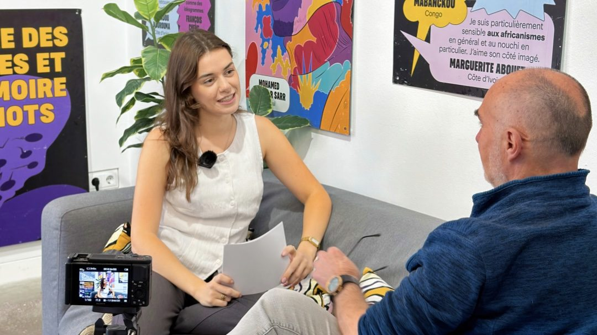

Rendez-vous is an interview video series I created and produced for the Alianza Francesa de Málaga. The idea: move away from direct promotional posts and attract people first through storytelling, giving a voice to students, alumni and figures connected to French culture.
I built the format from scratch and produced each episode end to end: research, pre-interview, filming, hosting, editing and publishing. Working alone meant working smarter: instead of editing full interviews, I cut the strongest moments into short videos made for social media.
Hosting in a mix of French and Spanish taught me to stay natural under pressure, adapting not just my language but my whole approach depending on who was in front of me. I learned that a good interview is never just a list of questions: it's knowing when to follow your script and when to abandon it entirely to follow the conversation.